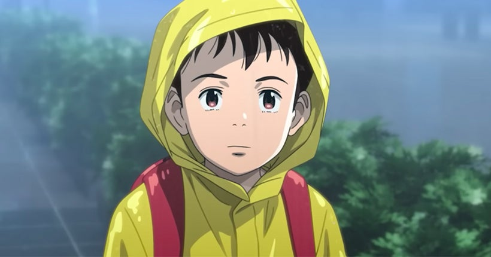
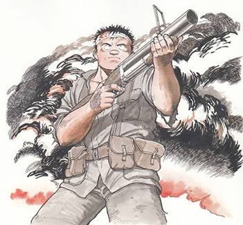
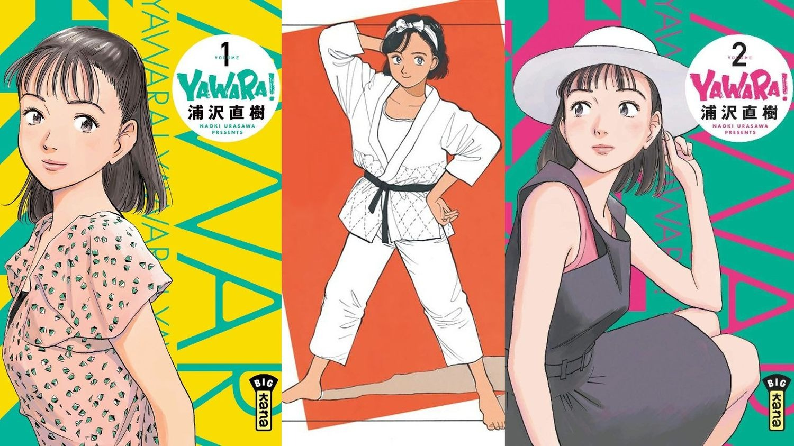
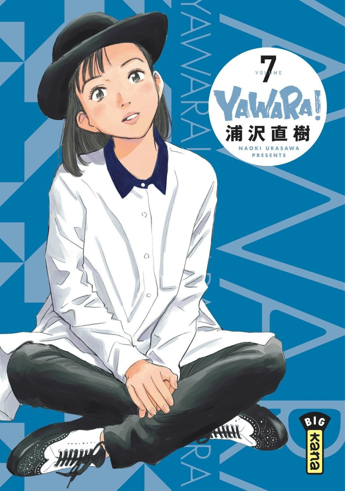
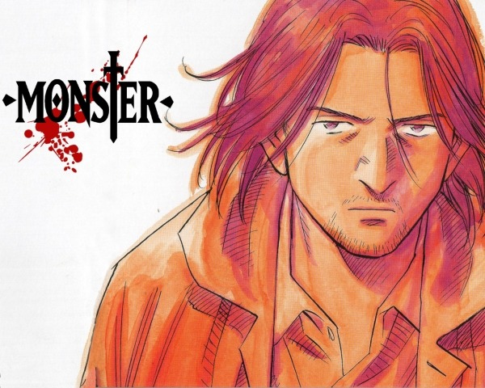
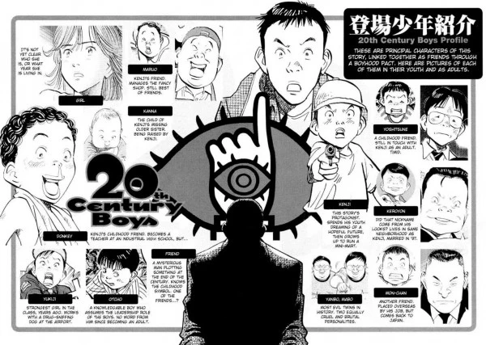
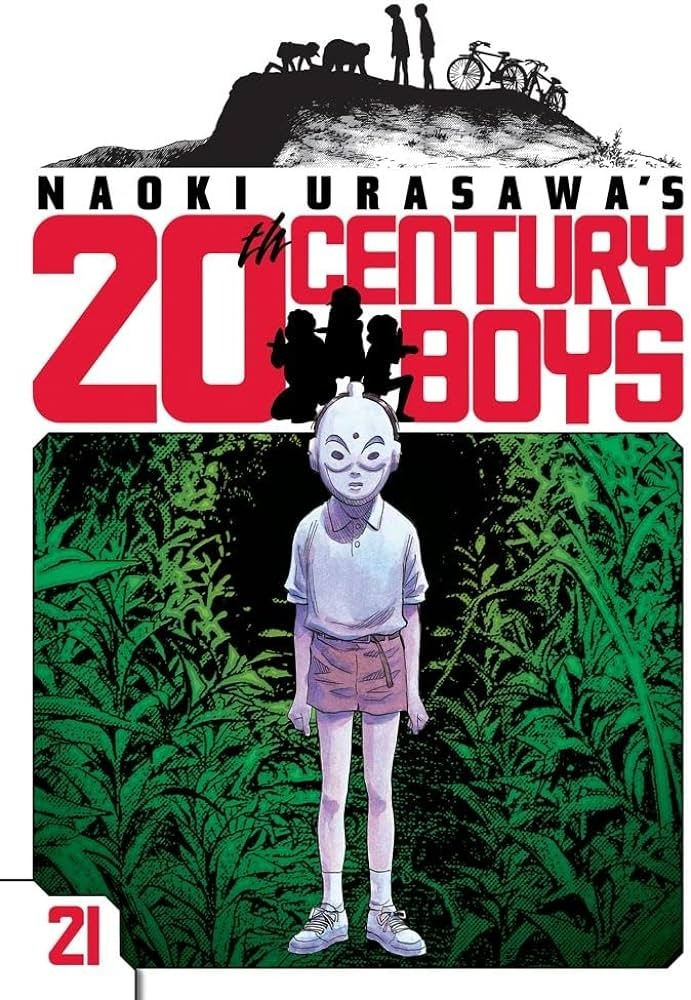
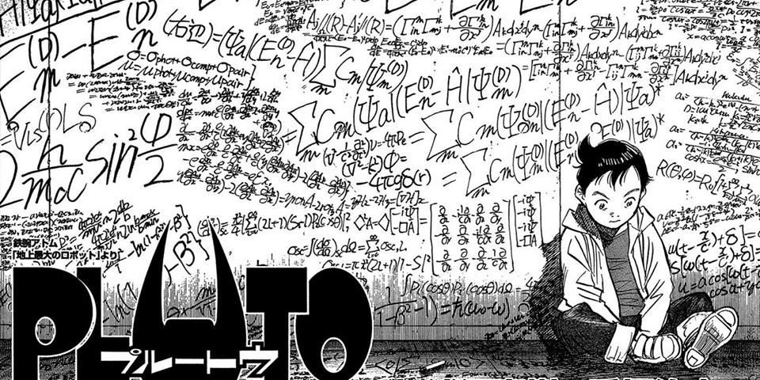
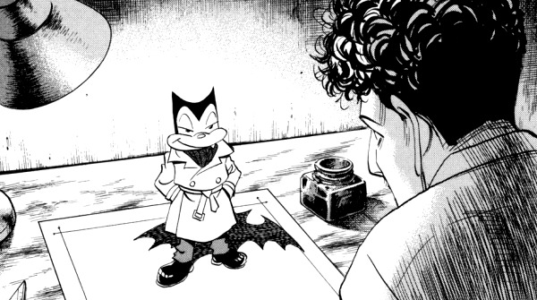
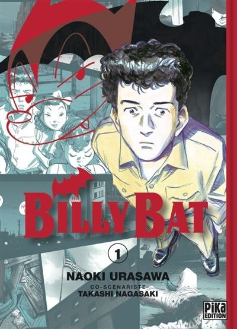

COMMENT NAOKI URASAWA, QUI NE SOUHAITAIT PAS DEVENIR MANGAKA, EST-IL DEVENU UN AUTEUR À LA RENOMMÉE INTERNATIONALE? RETOUR SUR UN PARCOURS ATYPIQUE DE PLUS DE TRENTE ANS.
LE MANGA COMME PASSION DÈS L'ENFANCE
Naoki Urasawa est né le 2 janvier 1960 à Fuchu, dans la préfecture de Tokyo. Enfant, il était un grand passionné de manga et notamment des oeuvres d’Osamu Tezuka, connu sous le nom de « dieu du manga » au Japon. Très isolé – en l’absence de ses parents et de l’autorisation de fréquenter les enfants de son quartier -, le petit Naoki passait des journées entières à recopier des personnages de Tezuka, en compagnie de sa grand-mère.
MANGAKA MALGRÉ LUI?
En quatrième et dernière année d’université, Urasawa passe un entretien avec Shôgakukan afin de devenir vendeur ou éditeur. Il ne souhaite pas devenir mangaka mais profite malgré tout de son entretien avec le rédacteur en chef du Shônen Sunday pour présenter certaines de ses planches. Le jeune homme souhaite en effet connaître l'avis d'un professionnel sur son travail d'amateur, avant de définitivement tourner la page de sa passion.
On refuse poliment son histoire courte, Return, qui raconte une amitié insolite entre un homme et un robot. Mais le directeur en chef adjoint du Shônen Sunday, qui passe par là, examine son manuscrit et le transmet au rédacteur en chef du Big Comic Original, qui est à son tour conquis par ce court manga. En 1982, sur les conseils de Shôgakukan, Urasawa participe au concours des jeunes auteurs... et remporte le prix du meilleur jeune mangaka pour Return. Naoki Urasawa décide alors de tenter sa chance en tant que mangaka professionnel :Je me suis dit : « On va essayer une année. Si ça ne marche pas, je pourrai toujours prendre un emploi dans une entreprise. »
1983 : LES DÉBUTS PROFESSIONNELS AVEC TAKASHI NAGASAKI
le transmet au rédacteur en chef du Big Comic Original, qui est à son tour conquis par ce court manga. un one-shot comique de huit pages, dans un numéro spécial du Big Comic dédié à Golgo 13, un célèbre manga de Takao Saito, qui raconte les aventures d’un tueur professionnel. Il le transmet au rédacteur en chef du Big Comic Original, qui est à son tour conquis par ce court manga.
Leur collaboration commence pourtant mal : Urasawa peine en effet à trouver son propre style artistique. L’auteur enchaîne les histoires courtes sans réussir à percer dans le milieu du manga. La persévérance du jeune mangaka finit toutefois par payer : ses histoires s’améliorent et finissent par être remarquées par le lectorat.
En 1986, Urasawa se voit ainsi offrir l’opportunité de travailler sur sa première série longue, Pineapple Army, en duo avec le scénariste Kazuya Kudô, mais également avec l’aide de Takashi. Ce manga, qui fait la part belle à l’action, paraît jusqu’en 1988 dans le Big Comic Original. Il compte huit volumes et remporte un certain succès.
YAWARA!, LE DÉBUT DE LA NOTORIÉTÉ
Urasawa devra toutefois attendre de se lancer dans Yawara! pour être révélé au grand public Publiée à partir de 1986 dans le Big Comic Spirits, parallèlement à Pineapple Army, cette comédie romantique, qui raconte le quotidien d'une lycéenne forcée de pratiquer le judo malgré elle, devient rapidement un énorme succès commercial et critique, couronné du trente-cinquième prix Shôgakukan en 1990. Urasawa est loin de s'en douter à l'époque, mais cette première récompense professionnelle ne fait en réalité qu'annoncer une série de succès inégalée parmi ses pairs... Yawara! est aussi le premier manga qu’Urasawa réalise seul, sans l’aide de Nagasaki. Le succès de la série – qui est adaptée en anime dès 1989 – ne fait que croître au fil du temps : ses vingt-neuf tomes s'écoulent à plus de trente millions d'exemplaires. Le judo connaît un véritable boom de popularité au Japon pendant les sept années de parution de Yawara!. Jusqu'à la conclusion du manga, en 1993.
Shôgakukan profite d'ailleurs de la popularité inattendue de Naoki Urasawa pour publier deux recueils de one-shots : Dancing Policeman, en 1987, et N.A.S.A l’année suivante. Ces deux volumes compilent les différentes histoires courtes d’Urasawa qui avaient été publiées dans le Big Comic, à l’époque où il n’arrivait pas à percer. Un one-shot dédié à Jigoro, le grand-père haut en couleurs de Yawara, sera quant à lui publié en 1993.
En 1988, Urasawa se lance, aux côtés de ses co-scénaristes Hokusei Katsushika et Takashi Nagasaki, dans une seconde série longue, Master Keaton, qui rappelle à de nombreux égards Pineapple Army (histoires courtes, héros itinérant, scènes d'action...). Le très bon accueil réservé aux enquêtes de Taïchi Keaton accroît encore un peu plus la renommée du jeune auteur. Une adaptation en anime voit le jour et la popularité du manga ne faiblit pas jusqu’à sa conclusion, en 1994.
LE VIRAGE DU THRILLER AVEC MONSTER
En 1994, un an seulement après le lancement de Happy!, le Big Comic Original accueille un nouveau titre du mangaka désormais habitué à travailler sur deux séries à la fois. Avec Monster, Urasawa - aidé de Takashi Nagasaki - débute enfin l'intrigue qui lui trottait dans la tête depuis un moment. Il espère en faire l'équivalent de « son » Phénix.
Le périple du docteur Tenma à travers l'Allemagne pour retrouver un tueur qu'il a sauvé des années plus tôt, alors qu'il est lui-même poursuivi à tort pour meurtres, captive immédiatement le lectorat japonais. Le succès de ce polar au cadre exotique ne fera que s'intensifier jusqu’à la fin de la prépublication, en 2001. Trois ans plus tard, Monster revient sur le devant de la scène grâce à son adaptation en anime. De nombreux ouvrages annexes (recueil de contes, enquête « journalistique »…) ont également vu le jour. En 2008, Monster a été réédité en version Deluxe, preuve supplémentaire du succès commercial et critique de la série.
En 1988, Urasawa se lance, aux côtés de ses co-scénaristes Hokusei Katsushika et Takashi Nagasaki, dans une seconde série longue, Master Keaton, qui rappelle à de nombreux égards Pineapple Army (histoires courtes, héros itinérant, scènes d'action...). Le très bon accueil réservé aux enquêtes de Taïchi Keaton accroît encore un peu plus la renommée du jeune auteur. Une adaptation en anime voit le jour et la popularité du manga ne faiblit pas jusqu’à sa conclusion, en 1994.
20TH CENTURY BOYS, SON OEUVRE LA PLUS CONNUE
En 1999, Naoki Urasawa apporte la touche finale à Happy!. Il se refuse toutefois à oeuvrer uniquement sur Monster, et se lance dans la foulée sur 20th Century Boys. Ce nouveau thriller est parfaitement en phase avec les inquiétudes de son époque, à l'approche du XXIème siècle.
Un souci d'autant plus préoccupant pour Kenji et ses amis d'enfance, qui avaient imaginé, dans les années 1960, que la Terre serait détruite le 31 décembre 2000. Le groupe doit désormais empêcher la réalisation de ses prédictions d'enfance, qu'un gourou surnommé Ami s'apprête à mettre en oeuvre... 20th Century Boys devient très vite un véritable phénomène éditorial, au point d’être sacré du prix Kôdansha (l’éditeur concurrent de Shôgakukan!) dès 2001. Le manga fait aussi l'objet d'une adaptation au cinéma, sous la forme d'une trilogie, à partir de 2008. L‘intrigue, complexe et ponctuée de nombreux sauts dans le temps, tient le lectorat en haleine pendant près de dix ans. Les nombreux thèmes abordés (le rock, le passage de l'enfance à l'âge adulte, les sixties...) en font aussi l'une des oeuvres les plus personnelles d'Urasawa.
En 1988, Urasawa se lance, aux côtés de ses co-scénaristes Hokusei Katsushika et Takashi Nagasaki, dans une seconde série longue, Master Keaton, qui rappelle à de nombreux égards Pineapple Army (histoires courtes, héros itinérant, scènes d'action...). Le très bon accueil réservé aux enquêtes de Taïchi Keaton accroît encore un peu plus la renommée du jeune auteur. Une adaptation en anime voit le jour et la popularité du manga ne faiblit pas jusqu’à sa conclusion, en 1994.
L'HOMMAGE À TEZUKA AVEC PLUTO
En 2003, alors que la publication de Monster s’est achevée depuis peu et que 20th Century Boys continue de captiver le lectorat japonais, Urasawa se lance dans un projet très ambitieux : Pluto, ou la réécriture d’une des histoires les plus connues d’Astro Boy, le célèbre enfant-robot créé par Osamu Tezuka.
Le mangaka et son complice de longue date, Takashi Nagasaki, transforment cette histoire simpliste en thriller futuriste, dans lequel les sept robots les plus puissants du monde sont menacés par un mystérieux tueur à cornes. Le succès commercial et critique de Pluto ne se fait pas attendre. La série a même l’honneur de paraître, dès sa sortie, sous la forme d’une édition Deluxe de grande qualité. De 2001 à 2007, Urasawa occupe d'ailleurs une place à part dans le milieu du manga. Ses séries sont couronnées des prix les plus prestigieux (comme le Grand Prix Osamu Tezuka pour Pluto en 2005) et l’auteur peut même se targuer pendant un moment d'être l’un des cinq plus grands revenus du Japon.
L’année 2006 marque toutefois un brusque retour à la réalité. La fin de 20th Century Boys, en avril, fait l’objet de vives critiques, qui portent autant sur le fond (une conclusion décevante) que sur la forme (les conditions de parution chaotiques des derniers chapitres). Le manga s’achève brusquement, sans apporter de réponse aux éléments les plus mystérieux de l’intrigue. Mais cette conclusion en est-elle vraiment une? Des pages supplémentaires du Big Comic Spirits annoncent un « chapitre final » pour le printemps 2007… près d’un an plus tard, autant dire une éternité pour des lecteurs frustrés et déçus.
BILLY BAT, SON MANGA LE PLUS AMBITIEUX
Urasawa et Nagasaki se lancent dans Billy Bat, un nouveau thriller. Le choix de faire paraître cette nouvelle série dans le magazine Morning, de Kôdansha, a surpris les fidèles d’Urasawa. Et pour cause, puisque le mangaka avait jusqu’ici toujours été édité chez Shôgakukan.
En 1949, alors que le monde se remet lentement de la Seconde Guerre mondiale, Kevin Yamagata, un auteur de comics installé à Los Angeles, a de quoi se réjouir : sa série policière, Billy Bat, remporte un grand succès. Son quotidien paisible est toutefois perturbé lorsqu’il apprend par un policier que sa chauve-souris détective ressemble fortement à celle d’une bande dessinée japonaise.
Depuis 2008, l’auteur donne occasionnellement, en binôme avec Takashi Nagasaki, des cours sur le manga aux étudiants de l’université Nagoya Zokei d’art et design.